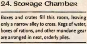

Week 10 - The Faceless One, the Ebon Aspect. A conclusion.
OMG. We had a week off, then on Monday I hit a 'roo on the scooter and wound up in hospital with a broken wrist. For any yanks reading this - we have that awful, awful "socialized medicine" here in oz. I wound up in a private room with nine screws in the wrist and on a Morphine drip - x-rays, CAT scan, an hour or two on the operating table. The ambulance ride will cost me, but the rest is all medicare - so no worries whatever, no deductible, no wondering if some damned insurance company is going to try to cheat me, no treatments or procedures I don't actually need. My tax dollars at work, thank God. And if it should be that I pay more medicare levy than I ever use, the money is going toward care for people less fortunate than I, not to some bloody multimillionaire so I'm happy to pay it.
The hand looks glorious - the bruising, the swelling. My D&D nick shall henceforth be "Deadhand". I'll get a good photo before it's too late.
Gratifyingly, everyone was keen to play. Chris was not available, but Arn the dwarven fighter is not a difficult character to manage and Steve (Tom's alter ego) played him. The session, again, was basically a melee - this time vs spellcasters. Everyone got that glum "we aren't going to survive this" look. But they did. Curses, foiled again.
The party investigates the storeroom thoroughly, locating a pint of oil, some iron spikes, and various other items of little value. While the party dicks around in this manner, the third band of kenkus heads into the inner chambers and alerts The Faceless One and his offsiders who proceed to prepare to receive the party.
The party proceed into the Outer Sanctum. Along the south "arm" of the L, they deal with a couple of low level kenku rogues. Turning the corner, they see what awaits them. At the north end of the "L" wait three mages - one with his face covered with a mask. In front of them is a huge giant centipede, and at the crook of the "L", a kenku rogue steps out of the shadows and starts laying down some more serious hurt.
Well. Arn is hit with a Ray of Clumsiness and a Ray of Enfeeblement. Flash is hit with something or other and retreats. Frith casts Sanctuary - he is still hurt from his encounter with the weasels. I forget what Jericho was up to. There are spells being cast and a bit of a logjam, so Tom - the half-ogre fighter - decides to go the back way, via the  Inner Sanctum.
Inner Sanctum.
This is an awful, awful idea as this room is home to an Allip. Needless to say, Tom the minmaxed fighter has a Wis of 6 (+2 with his headband) and a will save of something very crap. The Allip has a DC 16 hypnotism effect and does Wis damage with an incorporeal touch attack. I was very sure that Tom was boned. I screwed up the hypnotism effect, ruling that the subject was held until they were damaged.
Tom is hypnotised by the Allip's insane babbling and stands rooted to the spot. It advances on him and strikes, draining away his wisdom. The forth Kenku reveals itself and casts Grease, tripping Tom. The Allip strikes again. Tom is very - very - nearly driven mad. He advances out of the Grease and heads towards the summoned centipede. The Allip follows him and strikes again but - unbelievably - fumbles (swear to God - I rolled it on the table in the open).
The rest of the party have not been idle. Frith, sensing the evil of the undead has advanced and turns the Allip with enough authority to disperse its essence … or, at least, with what would have been enough authority to disperse its essence were this place not dedicated to The Shadow. Still, the Allip departs.
Around about now, Tom deals with the summoned centipede, and Arn is making headway vs the Rogue. But with his ducks all in a row, the Faceless One sends a bolt of Lightning down the corridor and everyone is badly fried, including one of the Faceless One's own allies. But then Flash comes out from behind the door and casts Silence at the end of the corridor.
Well. That changes things. The Faceless One flees and heads inside to his  lab. The party mop up and pursue. The final battle is brief, but the party prevail and - heeding Frith's warnings - are careful not to slay their villain. The Allip appears again, but once again is driven off. The party loot the complex, finding the key to the cypher used by The Faceless One on that parchment he gave to Theldrick. Frith uses a bit of cheese from the Spell Compendium to enable Flash to Decipher Script with divinely encanced ability.
lab. The party mop up and pursue. The final battle is brief, but the party prevail and - heeding Frith's warnings - are careful not to slay their villain. The Allip appears again, but once again is driven off. The party loot the complex, finding the key to the cypher used by The Faceless One on that parchment he gave to Theldrick. Frith uses a bit of cheese from the Spell Compendium to enable Flash to Decipher Script with divinely encanced ability.
After encountering and driving off the Allip one final time, and then head out. Flash uses his changeling abilities to disguise himself as The Faceless One, and so the guards attempt no impertinence as the party leave Dourstone Mine.
I did this next bit as a cutscene, because the party were in no shape to deal with a 10HD outsider. There might, however, be other Ebon Triad lunatics in this campaign attempting the same thing, and so the party may yet have to face and defeat an Ebon Aspect.
The party take The Faceless One to Allustan's place. He alerts one or two of the town's prominent persons and the prepare to question him. But as they begin, The Faceless One gives up the ghost, and a tremor issues from deep beneath Dourstone Mine. Miners begin fleeing in panic, calling "Collapse! Collapse! Run for your life!" (in dwarvish, which has a very succinct vocabulary for this type of thing). But soon they are fleeing for a different cause, for they flee a horror.
{kind=link}
This is the Eberron version. It does not exactly match the artwork, but you get the idea.
It has the body of a flayed giant, its raw muscle glistening with blood. Its head is that of a skeletal dragon, though fleshy eyes peer out of its bony sockets. The entire creature is surrounded by halo of dark mist - the cloak of The Shadow. It has six arms tipped with vicious talons. Two belong to the flayed giant. Two are the bony forelimbs of a skeletal dragon; the left is missing its forelimb and paw. And two are insubstantial limbs of pure shadow.
Every divine and arcane caster in town converge on the thing. From the garrison come the clerics of Dol Arrah and a squad of fighters, with paladins of the goddess of war among their number. From the Church of the Silver Flame come a few preists of the flame, their theological differences with the followers of The Twelve temporarily put aside. Vinelle the ranger, Tidwoad 'd Kundark, three dwarvish fighters, the Artificer from the ore smelting plant, a pair of elvish mages from the Moonmeadow estate, Allustan himself, and others arrive. Last and best of all, the cult of The Keeper arrive from the graveyard, their faces set against the blasphemy before them, arrive and begin a chant whose meaning is know only to them and, it seems, the monster.
Some fall, but the town is victorious.
Then, it is time for justice. Ragnolin Dourstone is hanged and his bones burned. Some few call for the party to be hanged too, but cooler heads prevail. The town eventually convinces itself that the party are heroes (which, of course, they are) and in gratitude refit Grallak Kur's magical banded mail to fit Tom, giving it spikes and one other enchantment of not more than +1 equivalent, Steve, but using the MIC is ok provided it's not psionic or something I don't know the rules for. Smenk talks his way out of trouble.
Amaryss - preistess and devotee of The Keeper - has a few words for Frith:
"This cult of the Ebon Triad is a shameful secret among those of us who rightly understand and serve the Dark Six. As you see, the seek to merge three of the six into an overgod. This is madness, blasphemy. The six would never countenance such a thing.
"And yet … and yet … how do these fools perform their spells? Whence comes their divine power?
"It is absurd to suppose that a mere cult of mortals could alter the very nature of the gods themselves. The gods are mighty principles, their purposes set by cosmic events. How can those that serve them, alter them? How could anything? The gods are not simply clay to be molded into different shapes, split and joined. You see? It is not merely that what these fools are attempting is difficult - it is that it is impossible by its very nature.
"And yet … and yet … how can they possibly not know this? Even if the followers do not, surely the leaders must.
"And so we conclude that the organisation exists for a different purpose than its stated goal - one that is occult. But what could possibly be more terrible than what they openly claim to attempt, that they must so hide the truth from their disciples?
"As you know, we who serve the gods spend many years knowing the liturgies, and the lessons, perfecting our knowledge and understanding of the powers we serve. And as you know - or ought to have been taught - there is real and terrible reason for this. For if one prays, but prays amiss, and yet with true faith; sometimes, something will reply."
And Allustan has a few words for Flash:
"Terrible, terrible. A terrible business. First the worms, and now this. There aren't that many that truly understand how lucky we all are that you put a stop to it when you did, but those that do are the important ones.
"Boy, I am very concerned about this mention of The Mistmarsh. Marzeena is stationed in Blackwall Keep, you know, and it's been a while since we corresponded. I meant to talk with her about these worms, but it's even more urgent now. We leave in three days.
"See if you can persuade your friends to come along - bandits and whatnot. It will just be a week or two."